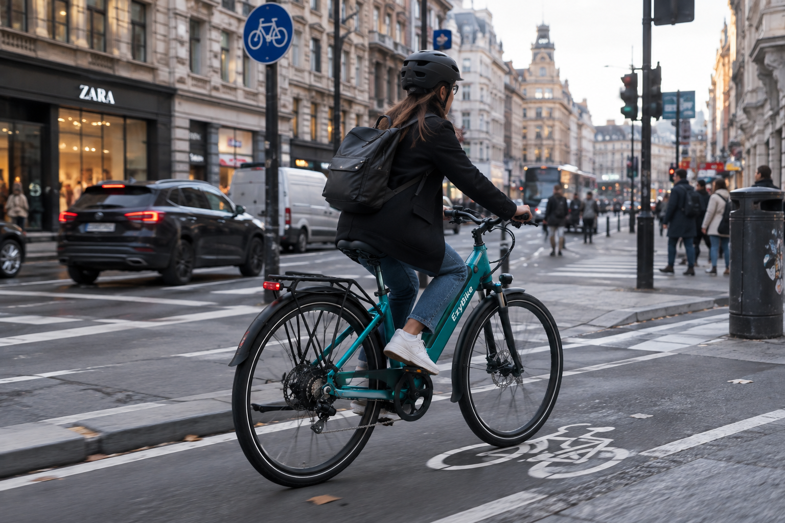
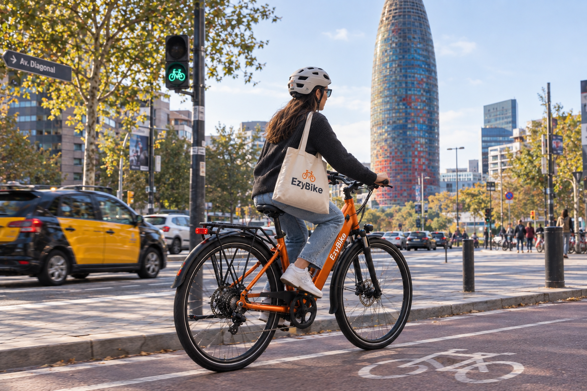
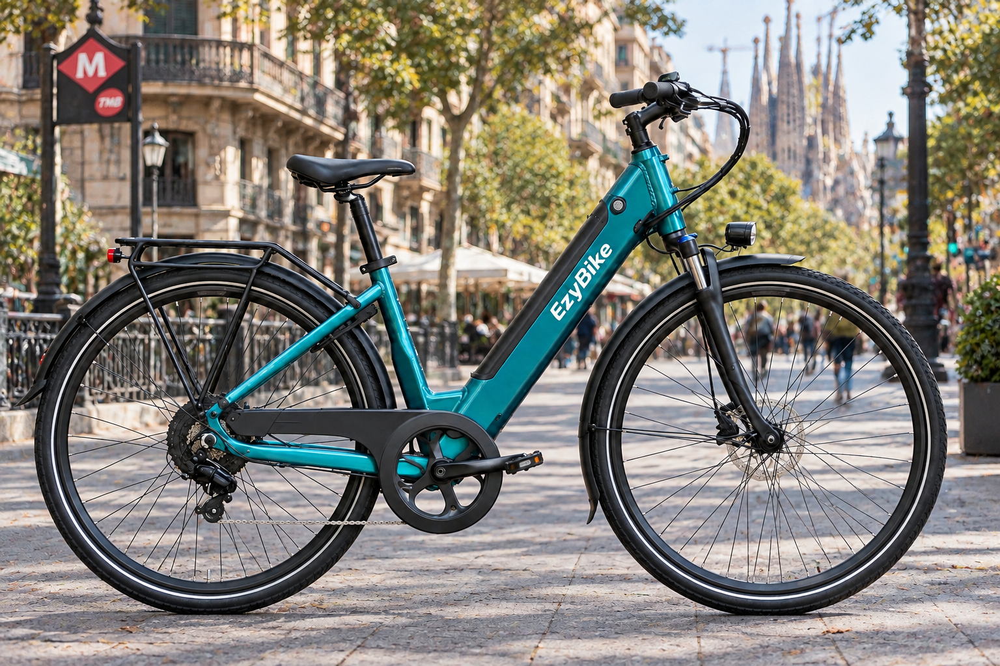
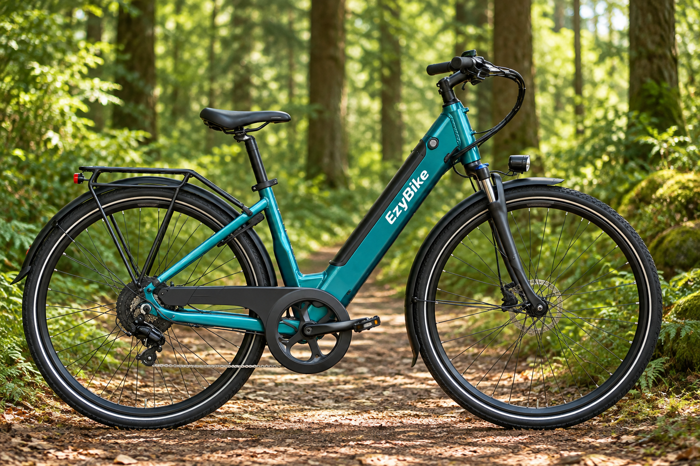
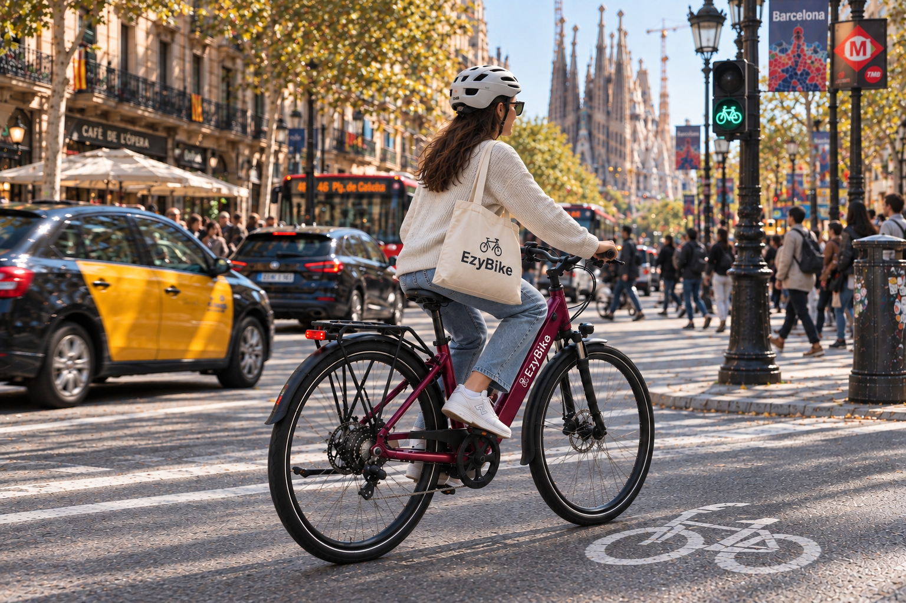
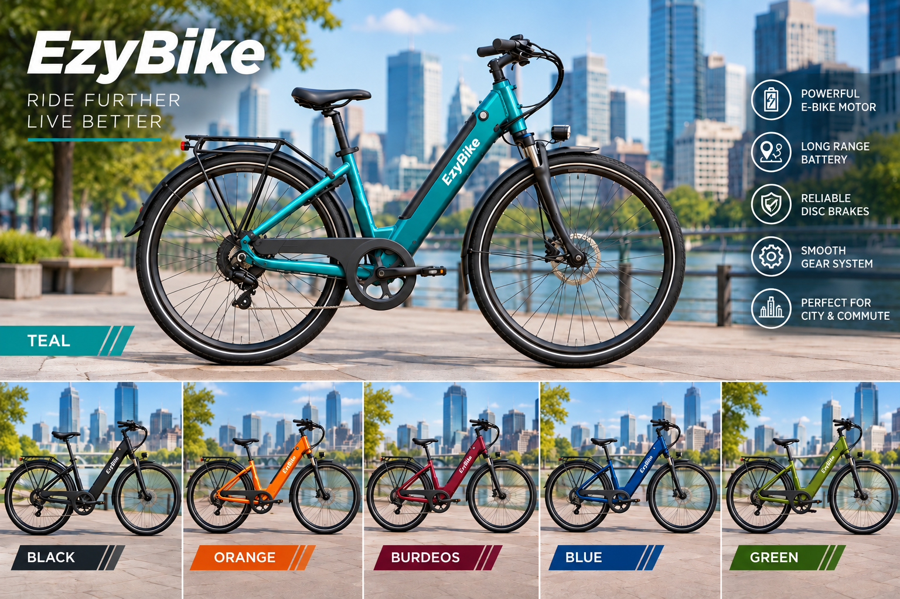

Una bicicleta elèctrica urbana pensada per moure’t per la ciutat amb més llibertat, comoditat i seguretat.
EzyBike és una bicicleta elèctrica urbana concebuda per facilitar els desplaçaments del dia a dia. Combina assistència elèctrica, tecnologia intel·ligent i elements pràctics perquè moure’s per la ciutat sigui més còmode, segur i eficient.

Dissenyada per fluir amb el trànsit urbà i escurçar els teus trajectes diaris.
Sistemes intel·ligents integrats per millorar l'experiència i la seguretat.
Equipada amb detalls pensats per fer-te la vida més fàcil a la ciutat.
EzyBike va més enllà de l'assistència al pedaleig. Incorpora electrònica i programari dissenyats específicament per millorar la teva seguretat i l'experiència de conducció.
Un sistema electrònic pensat per incrementar la seguretat de la bicicleta i dificultar-ne l’ús o moviment no autoritzat.
La bicicleta incorpora tecnologia de localització GPS per facilitar el seguiment de la seva ubicació en tot moment.
La pantalla integrada mostra informació essencial durant el trajecte, com ara la bateria restant, la velocitat i altres dades de conducció.

La combinació de motor i bateria ofereix una autonomia pensada per cobrir les necessitats habituals de mobilitat urbana, donant-te l'impuls que necessites en cada pedalada.
* L'autonomia real pot variar segons factors com el terreny, el pes del ciclista, el nivell d'assistència seleccionat i altres condicions d'ús.
La bateria es pot extreure fàcilment de la bicicleta. Això en facilita la recàrrega, permetent-te carregar-la còmodament a casa o a l'oficina sense haver de moure tota la bicicleta fins a un endoll.

EzyBike està pensada per adaptar-se a les teves diferents necessitats de mobilitat urbana. Cada detall mecànic i de disseny està orientat a fer-ne un ús quotidià més pràctic.

EzyBike incorpora suports mecànics posteriors robustos que permeten afegir complements per transportar equipatge i altres accessoris. A més, la bicicleta ofereix la possibilitat d’incorporar una cadireta infantil compatible, convertint-la en un vehicle familiar ideal per a trajectes curts.
Explora la bicicleta en diferents entorns i situacions reals.
Llisca per veure més
Colors disponibles per adaptar-se a la teva personalitat. Troba l'EzyBike que millor encaixi amb tu.

Pensada expressament per als desplaçaments quotidians per la ciutat.
Equipada amb GPS, sistema antirrobatori i informació de conducció a l'abast.
Entre 50 i 90 km d’autonomia aproximada amb assistència al pedaleig per no quedar-te tirat.
Bateria extraïble fàcil de carregar i un disseny ergonòmic orientat a l’ús diari.
Possibilitat d’incorporar accessoris per transportar equipatge o cadiretes infantils.
EzyBike neix amb l’objectiu d’oferir una alternativa pràctica per als desplaçaments urbans, especialment en trajectes quotidians on la bicicleta pot substituir altres formes de transport menys eficients.
Descobreix una bicicleta urbana que combina assistència elèctrica, tecnologia intel·ligent i funcionalitat en un sol vehicle.